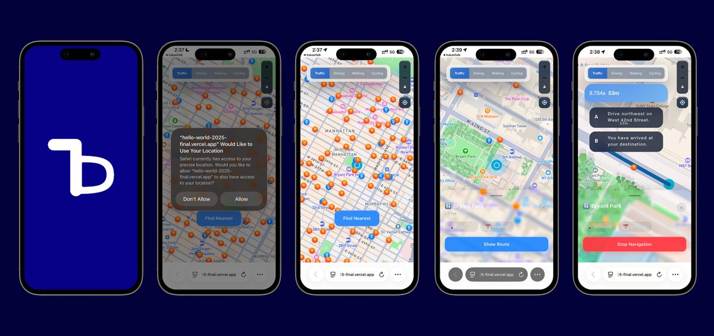
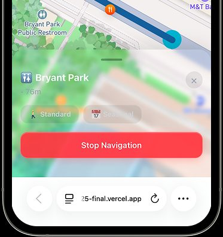
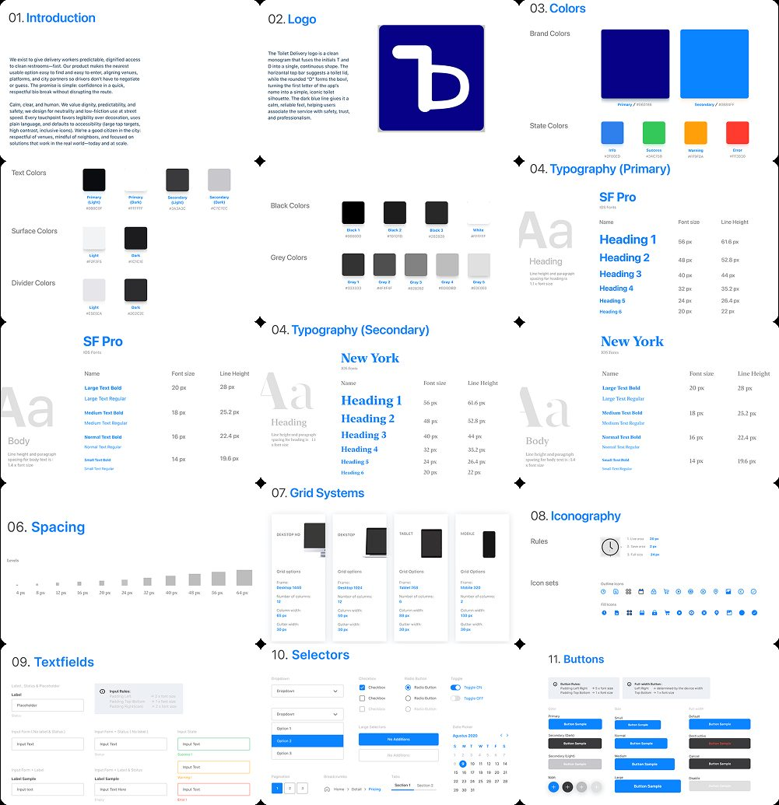

Toilet Delivery
A map-based web app that helps New York delivery workers find a usable restroom, fast.
[Live prototype link]
1. Overview
Find a restroom that will let you in
Most maps show every restroom. TD shows the ones that are open, accessible and worth the detour.
2. Problem
A basic need costs time and income
- Tight schedules, no reliable restroom access.
- Restrooms are locked, "customers-only," or slow to enter.
- Existing tools don't say if a restroom is usable right now.
"People just would say no and you are delivering in residential estate in the middle of nowhere."Anonymous interviewee
3. Research
Restrooms exist. Access is the problem.
Why a restroom is unusable during a shift
No usable restroom when needed
Denied access by staff
Parking or ticket risk
4. Solution
Three principles, three features
Find nearest, and go
One tap picks the closest usable restroom and starts the route.
Demo: the map loads with pins, the user taps Find nearest, and a route appears.
Ranked by usability
Each restroom shows its type and a quality rating, not only distance.

Drive, walk or cycle
Routes, time and distance update for each way of moving.
Demo: the user switches travel modes and the route updates each time.
Design system and brand

5. Reflection
Tested live at Studio Open Day
"This is actually something I need. I usually just guess and hope it works."Delivery worker, Open Day
"I like that it doesn't show everything, just the ones that actually work."Visitor feedback
What I took away
- Find the clear insight, then design decisively.
- Scope is a design decision, not a constraint.
- Usability comes from subtraction.
Next for TD
- More commute options.
- Parking near each restroom.
- Opening hours for restaurant restrooms.
- Ratings from workers.
See next project
Budgie
A parrot-shaped desk companion that keeps long-distance friendships warm.